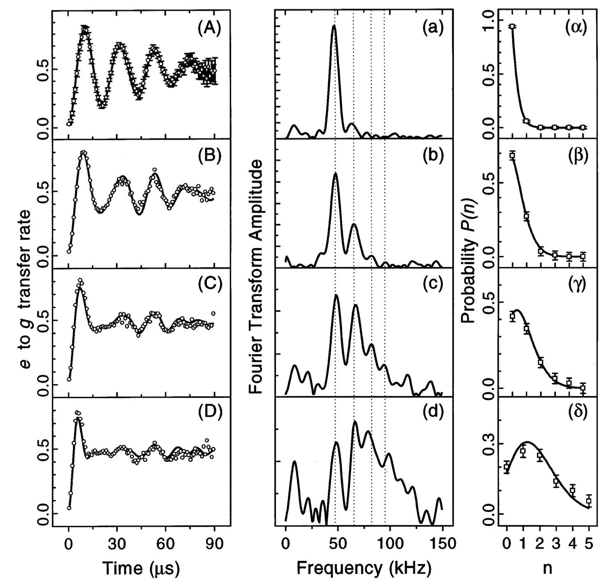

import numpy as np
import matplotlib.pyplot as plt
from qutip import *
# Parameters
wc = 5.0 # cavity
wq = 5.0 # atom (on resonance)
g = 0.1 # coupling
kappa = 0.01 # cavity decay
gamma = 0.00 # atomic T1 (suppressed)
N = 20 # Fock cutoff
# Operators
a = tensor(destroy(N), qeye(2))
sp = tensor(qeye(N), sigmap())
sm = tensor(qeye(N), sigmam())
sz = tensor(qeye(N), sigmaz())
H = wc * a.dag() * a + 0.5*wq * sz + g * (a.dag() * sm + a * sp)
# Dissipators
c_ops = [np.sqrt(kappa) * a, np.sqrt(gamma) * sm]12 The Jaynes–Cummings model: The Prove of Field Quantization
At the crossroads of quantum optics and cavity QED, the Jaynes–Cummings (JC) model stands out as the simplest non‑trivial arena in which a single photon mode interacts with a single two‑level atom. Despite – or perhaps because of – its austerity, it captures phenomena that range from vacuum Rabi oscillations to Schrödinger‑cat states. In what follows I weave together the story of the model, its mathematics, and its experimental vindication, culminating in Serge Haroche’s celebrated observation of field quantisation.
## The Jaynes–Cummings Hamiltonian: more than a toy
The JC Hamiltonian was born amid a heated 1960s debate over whether maser radiation had to be quantised. Edward Jaynes and Frederick Cummings answered with a fully quantum description whose predictions flatly contradicted semi‑classical intuition. In the rotating‑wave approximation it reads
\[ \hat H = \omega_c \hat a^{\dagger}\hat a + \frac{\omega_q}{2} \hat\sigma_z + g\bigl(\hat a^{\dagger}\hat\sigma_{-}+\hat a \hat\sigma_{+}\bigr). \]
where \(\hat a\) is the cavity field’s annihilation operator, \(\hat\sigma_z\) is the atom’s Pauli operator, and \(g\) is the coupling strength. The first two terms describe the free evolution of cavity and atom, while the last term couples them.
The JC model conserves the total excitation number \(N = \hat a^{\dagger}\hat a + \hat\sigma_+\hat\sigma_-\). This means that the Hilbert space decomposes into sectors of fixed \(N\), each spanned by the states
\[ |\psi_{n, 1}\rangle = |n, e\rangle \quad \text{and} \quad |\psi_{n, 2}\rangle = |n+1, g\rangle \]
The JC Hamiltonian acts within each sector as a \(2\times2\) matrix
\[ \hat H_{n} = \begin{pmatrix} \omega_c n + \frac{\omega_q}{2} & g\sqrt{n+1} \\ g\sqrt{n+1} & \omega_c (n+1) - \frac{\omega_q}{2} \end{pmatrix}. \]
The eigenvalues of this matrix are
\[ E_{n, \pm} = (n + \frac{1}{2}) \omega_c \pm \frac{1}{2} \Omega_n \tag{12.1}\]
where
\[ \Omega_n = \sqrt{(\omega_c - \omega_q)^2 + 4g^2(n+1)} \tag{12.2}\]
is the Rabi frequency.
### Collapse and revival in plain words
When the cavity field is prepared in a coherent state \(|\alpha\rangle\) and the atom in its ground state \(|g\rangle\), the atomic inversion can be written as a superposition of Rabi oscillations at frequencies \(\Omega_n\), each weighted by the Poisson probability \(P_n=e^{-|α|^2}|α|^{2n}/n!\). The resulting interference leads to an initial collapse of the oscillations, followed by a revival. The time evolution of the atomic inversion is given by
\[ \langle \hat\sigma_z(t) \rangle = \sum_{n=0}^{\infty} P_n\,\cos\bigl(2\Omega_n\,t\bigr) \, . \]
## The open-system perspective
Real cavities leak, as well as electrons in the atom decay. To account for this, we can extend the JC Hamiltonian with a Lindblad term that describes the interaction with the environment. The master equation for the density operator \(\rho\) reads
\[ \dot\rho = -\tfrac{i}{\hbar}[\hat H,\rho] + \kappa\,\mathcal D[\hat a]\rho + \gamma\,\mathcal D[\hat\sigma_-]\rho, \]
with \(\mathcal D[\hat O]\rho = \hat O\rho\hat O^{\dagger} - \tfrac12{\hat O^{\dagger}\hat O,\rho}\) being the Lindblad dissipator. When \(\kappa\) and \(\gamma\) are small compared to the Rabi frequency, the JC model is in the strong-coupling regime, where the coherent oscillations are visible despite the dissipation. On the contrary, if \(\kappa\) or \(\gamma\) are large, the oscillations are damped and eventually disappear, which corresponds to the weak-coupling regime.
12.1 Simulating the JC model with QuTiP
## Damped vacuum Rabi oscillations: The hello‑world of cavity QED
We now simulate the open system dynamics of the JC model, starting from the \(|\psi(0)\rangle = |0,e\rangle\) state and watch excitation watch the atomic population in time. Theory predicts a cosine at frequency \(2g\), blurred by an exponential envelope \(e^{-\kappa t/2}\).
12.2 Demonstration of Electromagnetic Field Quantization: The Haroche Experiment
A landmark experiment that unambiguously demonstrated the quantization of the electromagnetic field was conducted by Serge Haroche’s group in the 1990s (Brune et al. 1996). The experiment used high-Q superconducting microwave cavities prepared in a coherent state \(|\alpha\rangle\). Rydberg atoms were sent one at a time through the cavity, interacting dispersively with the quantized field. The population of the atomic excited state was measured as a function of the atom-cavity interaction time.
12.2.1 Key Observations:
- The atomic population exhibited collapse and revival dynamics.
- These revivals correspond to the quantum interference between Rabi oscillations at different frequencies \(\Omega_n = \Omega_0 \sqrt{n+1}\), each associated with a Fock state component \(|n\rangle\) in the coherent state.
- A Fourier transform of the signal revealed multiple peaks, each corresponding to a discrete photon number.
This experiment cannot be explained using a classical field description. The observed dynamics and frequency components are direct evidence of the discrete (quantized) nature of the electromagnetic field. It remains one of the most compelling demonstrations of field quantization in quantum optics.
### Preparing the coherent field
To simulate Haroche’s experiment, we need to prepare a coherent state \(|\alpha\rangle\) in the cavity and a two-level atom in its ground state.
We can now use the mesolve function to evolve the system in time, while measuring the atomic population.
### Fourier spectroscopy: The signature of Fock states
Each Fock state \(|n\rangle\) drives the atom at \(\Omega_n = 2g\sqrt{n+1}\), so the Fourier transform of \(\langle \hat\sigma_z(t)\rangle\) must exhibit a comb at precisely those spacings.
This plot worths the Nobel prize in 2012, as it shows the quantization of the electromagnetic field. Indeed, the peaks at \(2g\sqrt{n+1}\) are a direct signature of the Fock states \(|n\rangle\) in the coherent state \(|\alpha\rangle\). Each peak corresponds to a different photon number, and their spacing reflects the quantized nature of the electromagnetic field.
